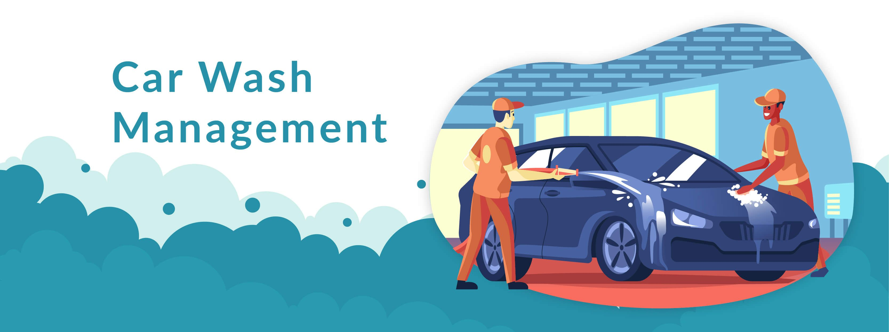

Managed Locations


Melbourne Airport Parking & Transport
Arrival Dr, Melbourne Airport VIC 3045

Camberwell Car Wash Management Ptv Ltd is a specialist car wash management company. We focus on operating and growing multiple car wash sites under one consistent standard of quality, safety, and customer experience.
We partner with car wash owners and investors to handle the operational side of the business. From staff management and training through to maintenance, compliance, and marketing, our goal is to maximise performance at every location we manage.
We currently manage several sites, including Camberwell Car Wash and two branches under the Washed brand. Each site is supported with tailored operational plans, local marketing strategies, and regular performance reviews.
To deliver consistent, high-quality car wash experiences across all managed locations while helping partners grow revenue and protect their assets.
Day-to-day management, SOPs, and quality control to keep every site running smoothly.
Recruitment, onboarding, and continuous training for consistent customer experiences.
Local marketing and brand development to attract and retain customers at each location.
Arrival Dr, Melbourne Airport VIC 3045
We focus on building long-term partnerships. A typical engagement starts with an initial assessment of your site, followed by an agreed management plan including operations, staffing, maintenance, and marketing priorities.
If you would like to discuss how Camberwell Car Wash Management Ptv Ltd can support your car wash, use the contact details below to get in touch.